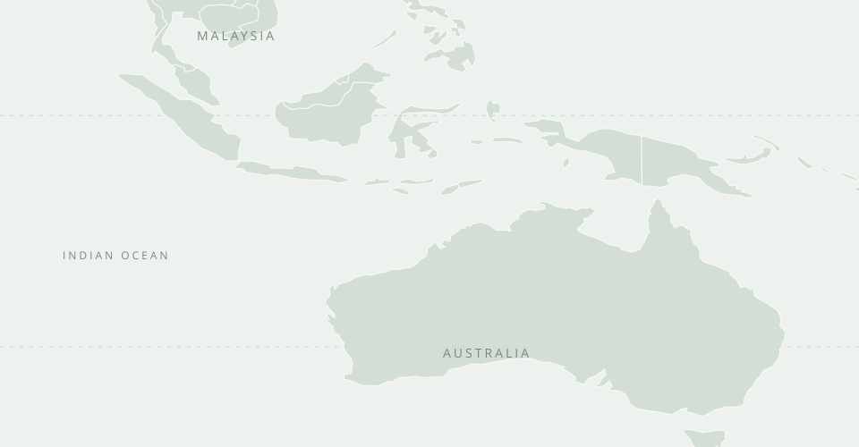

Loading the research atlas…
CRITICAL MINERALS / COMPANY ATLAS
Inside the
rare earths
supply chain.
Explore how Lynas turns Australian ore into the materials behind advanced magnets. Follow the operations, examine the numbers and test what comes next.
60NdNEODYMIUM144.242
59PrPRASEODYMIUM
66DyDYSPROSIUM
65TbTERBIUM
SMALL ELEMENTS.
STRATEGIC INDUSTRIAL ROLE.
STRATEGIC INDUSTRIAL ROLE.
MINING → PROCESSING → SEPARATIONAUSTRALIA & MALAYSIA
September-quarter report released. The 29 October update is now included. Read the original report ↗
UPDATED 29 OCTLATEST QUARTER / Q1 FY27 · ENDED 30 SEPTEMBER 2026
Stronger sales. December maintenance ahead.
30 September 2026 · unaudited
Cash flow table · report p 7 ↗PRODUCTION & OUTLOOK
↓ Python chart (SVG)4,254t total REO · 23t Dy/Tb. December-quarter plans include about one month offline in Malaysia and two weeks in Kalgoorlie; output is expected to fall. Operations · p 6 ↗

FY2026 ANNUAL CONTEXT / YEAR ENDED 30 JUNE
Revenue recovered. Execution still matters.
+75.7% year on year
Annual report · p 1 ↗+10.7% ready for sale
Annual report · p 18 ↗A$8.0m in FY25
Annual report · p 1 ↗30 June 2026 · includes equity raised
Results release · p 3 ↗FIVE YEARS IN VIEW
REPORTEDRevenue exceeds its FY22 level
A$ million · years ending 30 June
Source: Lynas annual reports. Explore values and definitions →
Three questions
for the next phase.
01Can new facilities deliver reliably?
↗02Track the IsaMill start-up and planned December shutdowns.
How sensitive are earnings to price?
↗03Test volume, basket pricing and costs independently.
Will growth plans convert to output?
↗Track the Meteoric proposal and downstream partnerships.
THE BASICS, WITHOUT THE JARGON
What does Lynas actually sell?
Rare earth oxides are inputs to further processing. Magnet manufacturers need metals and alloys; oxide output is one stage of that supply chain.
Follow the process →02 / FINANCIAL EXPLORER
The numbers behind the business.
Explore financial and operating trends. All annual periods end on 30 June; monetary values are Australian dollars.
REPORTED
Underlying values
Exact data used in the chart · no interpolationProduction is not sales
Ready-for-sale production measures output. Sales volumes measure shipped product. Inventory timing means the two can differ.
Quarterly sales use a different definition
Quarterly gross sales exclude quotational adjustments and are unaudited. Their sum is not annual audited net revenue. Basket ASP is a product-mix average, not an NdPr price.
EBITDA is a company-reported non-IFRS measure, distinct from adjusted EBITDA. FY22 NPAT includes a tax benefit. FY22 annual report ↗
↓ Download Python-generated annual chart (SVG) · September update (SVG)
03 / OPERATIONS & PRODUCTS
From Western Australia to the world.
Three operating locations form the core chain. Select a site to see its role, progress and constraints.
OPERATING FOOTPRINTSELECT A LOCATION

Python map · Natural Earth public-domain boundaries. Markers approximate; routes schematic, not shipping tracks. Map source ↗
UNDERSTAND THE VALUE CHAIN
Four stages, different businesses.
Mine & concentrate
Ore from Mt Weld is upgraded into a rare earth concentrate.
Crack & leach
Processing releases rare earths from their mineral structure. Kalgoorlie produces an intermediate mixed rare earth carbonate.
Separate & refine
Malaysia separates individual rare earth products. NdPr, Dy, Tb and Sm serve different applications.
Metal & magnet making
Partners convert materials into metals, alloys and magnets. Planned downstream projects are distinct from Lynas’ existing oxide output.
Sources: FY23 report, operations; FY25 report, operations; JS Link agreement.
Caldeira, Brazil: a potential new feedstock source
Meteoric’s DFS estimates 12,500tpa TREO and 3,862tpa NdPr, US$498m initial capex and a 23-year reserve-supported life. These are project forecasts; the scheme remains conditional.
Company presentation · slide 6 ↗REO, NdPr and TREO
REO means rare earth oxide. NdPr is neodymium-praseodymium and forms part of total REO. TREO means total rare earth oxides in a stated resource or product context. Adding NdPr to REO double-counts it.
04 / SCENARIO LAB
Test the assumptions. See the consequences.
An illustrative FY27–FY30 revenue and gross profit model anchored to FY26. Change the inputs to explore sensitivity.
User scenarios, not company guidance or consensus forecasts. No probability is assigned. Basket price is A$/kg across all REO sold; the JARE NdPr floor is not applied to this basket.
ILLUSTRATIVELatest quarter is now available, but this sensitivity model retains FY26 cost of sales. Planned December downtime means one quarter should not be multiplied by four as guidance. Company outlook ↗
How the scenario develops
A$ million · dashed lines are illustrative
Anchor: FY26 annual report · p 17. Calculations: transparent model below.
Scenario output
How do price and sales volume change gross profit?
FY27 gross profit, A$m · selected inputs ±A$10/kg and ±1,000 tonnes
Each cell recalculates volume-linked costs. Highlighted cell uses your selected inputs. Colour is secondary to the labelled values.
Model equations, baseline and limitations
Revenue (A$m) = REO sales (tonnes) × basket selling price (A$/kg) ÷ 1,000.
Cost of sales (A$m) = 585.5 × [fixed share + (1 − fixed share) × projected sales ÷ 12,122] × (1 + cost inflation)years after FY26.
Gross profit = revenue − cost of sales. Gross margin = gross profit ÷ revenue. Sales volume grows annually from FY27; basket price remains constant. FY26 reported revenue is A$977.945m; multiplying rounded basket ASP by volume produces a small rounding difference.
The model excludes new project capex, acquisition effects, step-changes in capacity or fixed costs, financing, tax, depreciation changes, product-mix detail, contractual price floors and upside sharing. Gross profit is not EBITDA, NPAT or free cash flow. It does not value Lynas shares. Fixed cost scaling is a simplifying assumption; large volume changes may require investment.
05 / RECENT COMPANY ANNOUNCEMENTS
Follow the next phase.
Company releases through 29 October 2026, including the new quarter and recent governance and capital notices. Later status updates are linked explicitly.
Recent formal notices from 25 September are included in the downloadable filing index, including superseded letters. For the complete filing record, open Lynas’ announcement archive ↗.
06 / SOURCE LIBRARY & METHODOLOGY
Every number has a source.
Original company filings, page locators and reproducible data. This is an independent research resource, unaffiliated with Lynas.
29 OCT 2026Snapshot cutoff · Sydney time
FY22–FY26Annual history · 30 June year-end
SEP 2026Latest quarterly results included
Data preparation
Numbers were transcribed from original annual reports and the September 2026 quarterly report, then checked with Python. The repository includes input CSV, JSON, scripts and model checks. No missing quarters are interpolated. Historical figures are nominal.
↓ Annual data (CSV) · Quarterly data (CSV)How to read this site
Reported figures describe past results. Company estimates describe proposed projects or milestones. Scenario outputs are calculations from your chosen assumptions. Forecasts are conditional and are not observations.
↓ Python chart (SVG)Coverage, rounding and refresh instructions
Annual revenue, NPAT and production history are cross-checked against FY26’s five-year table (printed p 65). EBITDA uses each year’s A.1 note, not adjusted EBITDA. Quarterly gross sales exclude quotational adjustments. Figures are shown with readable rounding; CSV files retain transcribed precision.
Sources are company disclosures and do not independently establish all company claims. No live share price, valuation recommendation or broker-consensus feed is included. The forecast model is deliberately a sensitivity tool.
This is a static snapshot and does not update automatically. To refresh: check the official announcement archive, update research/annual.csv, research/quarterly.csv and research/quarterly-context.json, revise announcement records and cutoff labels, run the Python preparation and model checks, then push to GitHub.
Visuals: original CSS element artwork; Python-generated revenue chart and map. Open Sans (SIL OFL), Chart.js (MIT), Natural Earth (public domain). Source PDFs remain hosted by their publishers.